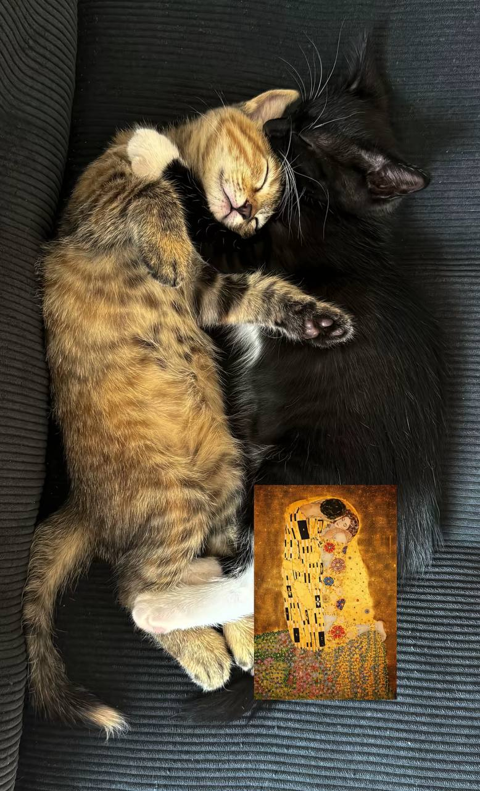

Немного информации
Обо мне
Создаю свой первый короткий сайт и изучаю основы HTML, CSS, Bootstrap и JavaScript.

Мне интересно узнавать, как устроены сайты, пробовать новые инструменты и постепенно добавлять на страницы полезные интерактивные функции.